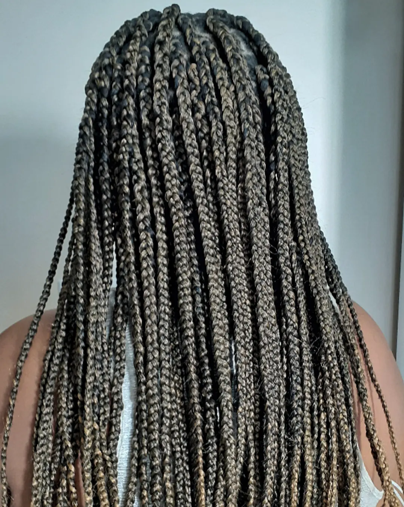
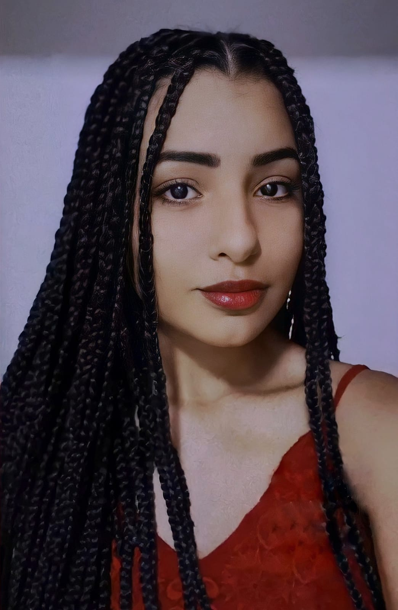

Esse é um estilo de tranças que fez muito sucesso durante os anos 90, é bestante procurado nos dias atuais. A verdade é que nunca deixou de ser moda, pois entre as suas diversas qualidades, o que se deve ressaltar é que além de elas serem lindas, práticas e estilosas, é que elas são feitas com diferentes materias, variando de acordo com cada gosto, protregendo o cabelo, assegurando o crescimento saudável e íntegro dos fios, contando que é bastante indicado para pessoas que estão passando por transição capilar, ou para as que simplesmente querem apostar em um novo visual.
As box braids surgiram no sul da África pelas mãos das mulheres que pertenciam á tribo de Mbalantu, na Namíbia, há aproximadamente 3 mil anos, e os principais materias utilizados na sua origem era feltro e lã. Hoje elas rodam por todo mundo fazendo sucesso em todas as partes, afinal, é uma trança ancestral muitíssimo poderosa.
No geral, elas são um pouco mais trabalhosas de fazer, levam em torno de 6 a 12 horas para ficarem prontas, isso porque existem uma gama de expessuras e modelos diferentes dela. Algumas pessoas optam por tranças mais finas, outras por tranças mais grossas, e por aí vai, é possivel colocá-la de diversas formas.
Como o seu tempo de duração é geralmente maior do que os outros estilos apresentados, saliento que uma higienização mais específica é nessaria para manter a saúde e a limpeza dos fios. É importante lavar os cabelos mesmo presos pelo menos uma vez na semana, e apenas usando shampoo, pois o uso de cremes podem levar ao mal cheiro. Entretanto, com uma boa limpeza (com muito cuidado para não estragar as tranças) e uma boa secagem, de preferência sem secador, nenhum tipo de mal cheiro irá acontecer. É bom lembrar que nenhuma trança ou qualquer outro tipo de penteado pode ficar mais de três meses no cabelo, para que esse não venha a sofrer uma grande desidratação, o ideal para as box braids, é que fique de um a dois meses, fazendo manutenção caso seja necessário.
Abaixo estão alguns dos meus trabalhos com essas tranças:
 